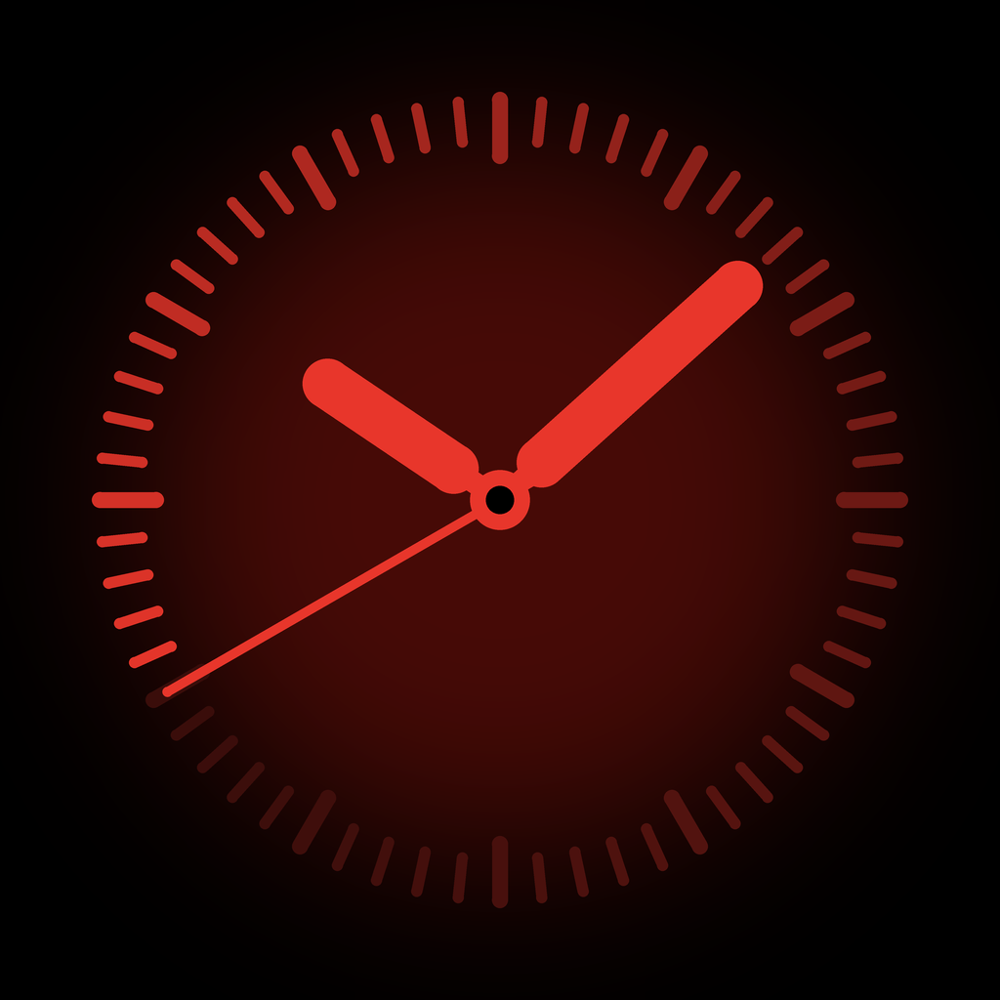

Die Uhr für den Nachttisch, fürs iPhone
Nachtuhr macht dein iPhone zur ruhigen Uhr für den Nachttisch. Wird es im Zimmer dunkel, wechselt die Anzeige auf gedimmtes Rot. Die Uhr bleibt die ganze Nacht sanft an, und gegen Einbrennen wandert die Anzeige alle paar Minuten unmerklich ein paar Pixel. Daneben siehst du das Wetter an deinem Ort.
Die Uhr wird im Dunkeln nicht rot. Die Frontkamera misst die Helligkeit im Raum. Prüfe in den iOS-Einstellungen unter Nachtuhr, ob der Kamerazugriff erlaubt ist, und dass die Frontkamera nicht verdeckt ist. Mit langem Drücken kannst du das Rotlicht auch fest einschalten.
Es wird kein Wetter angezeigt. Erlaube der App den Standortzugriff („Beim Verwenden der App“).
Nimmt die App Bilder auf? Nein. Die Kamera misst nur, wie hell es ist; es werden keine Bilder aufgenommen, gespeichert oder gesendet. Mehr dazu in der Datenschutzerklärung.
Fragen, Probleme oder Ideen? Schreib an hallo@wunschfroh.de.
Wetterdaten: MET Norway (Norwegisches Meteorologisches Institut), lizenziert unter CC BY 4.0. Die Sätze zum Wetter von morgen werden von der App aus diesen Daten abgeleitet; dafür ist MET Norway nicht verantwortlich.
Weather data: MET Norway, licensed under CC BY 4.0. The app derives the short forecast sentences from this data; MET Norway is not responsible for them.